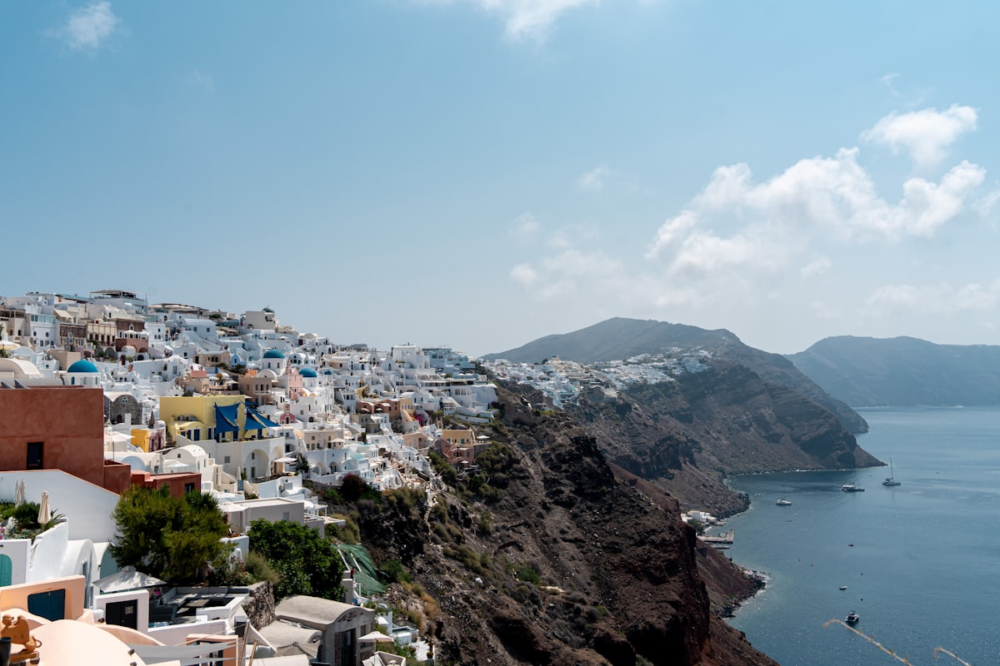
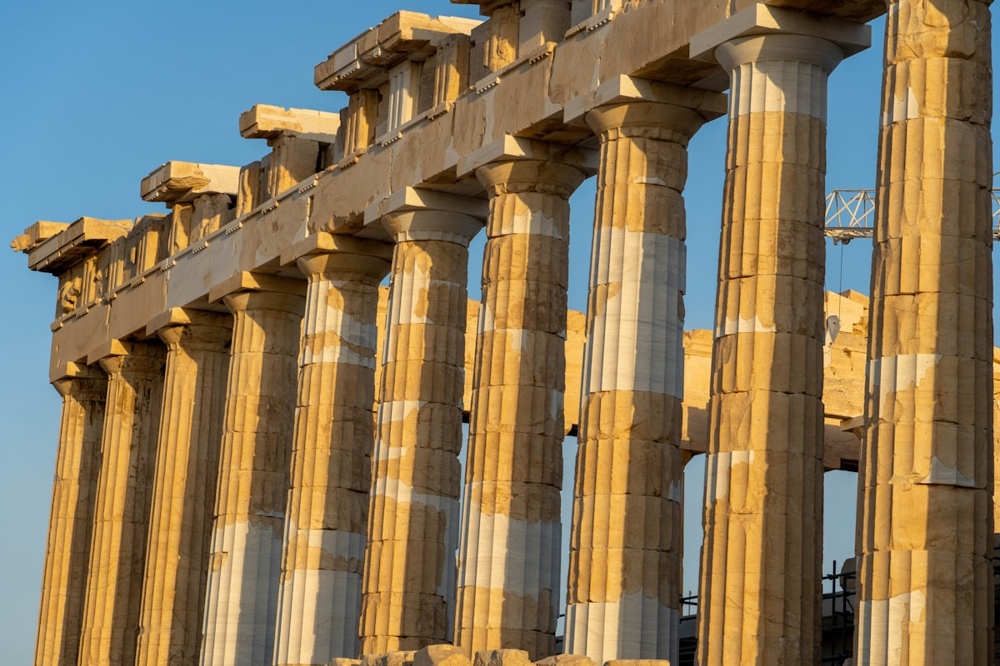
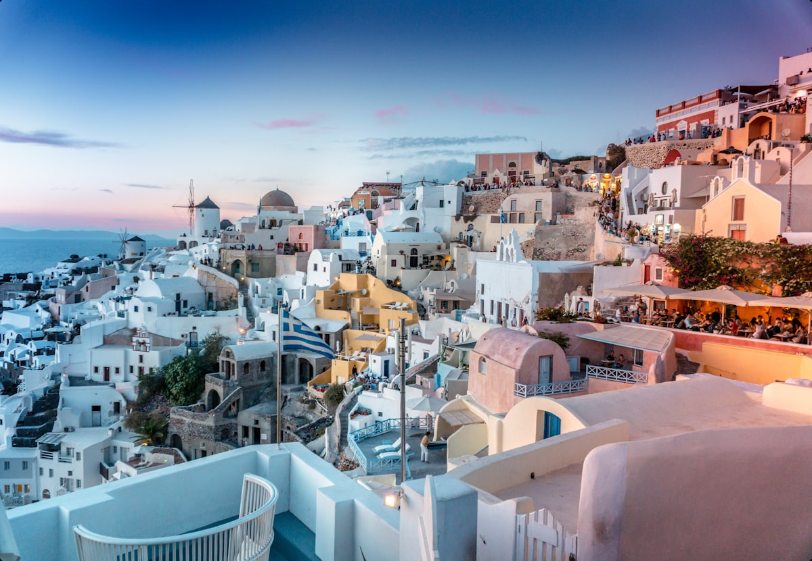
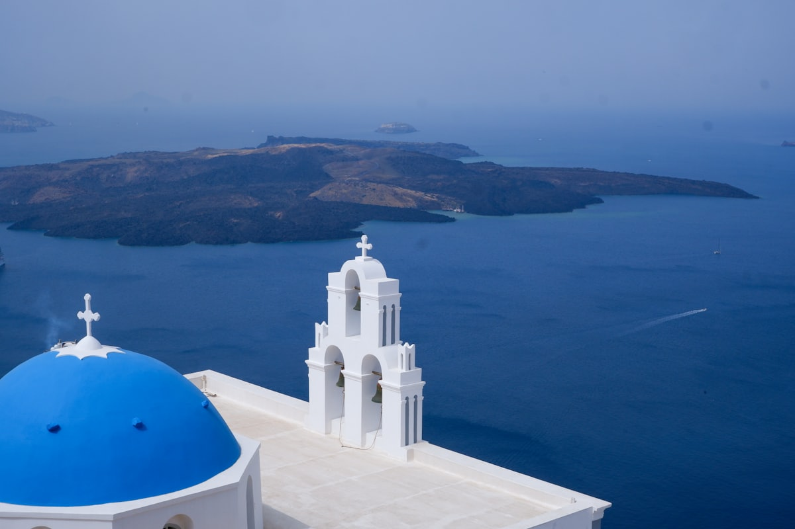
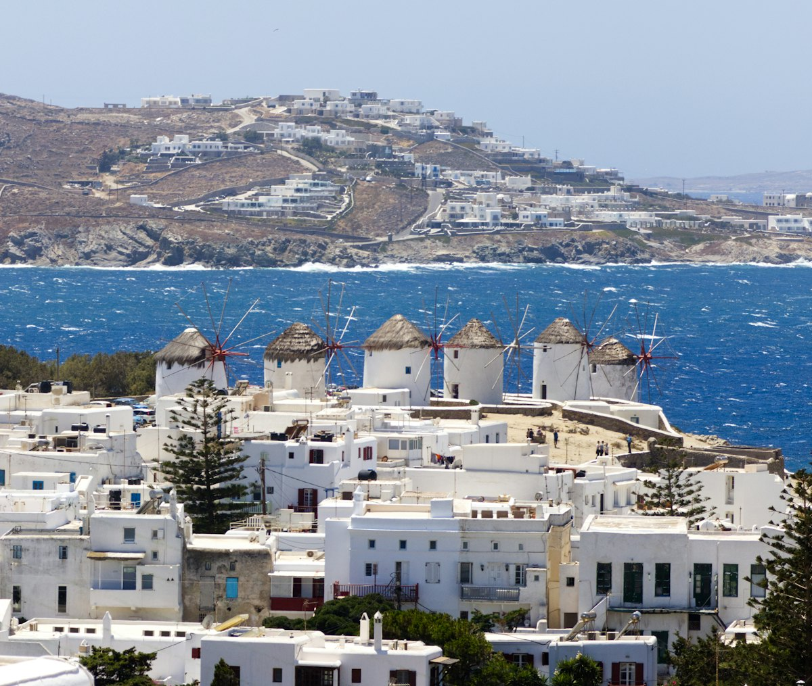
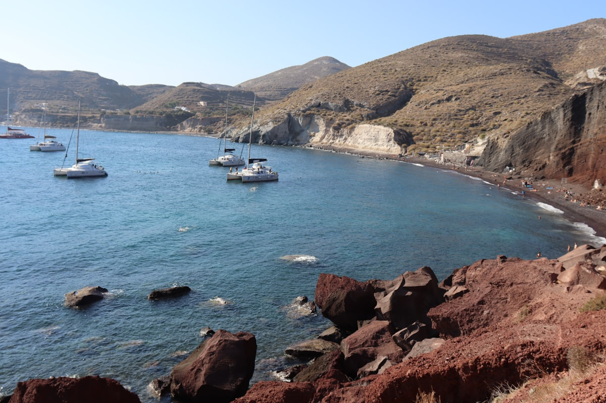
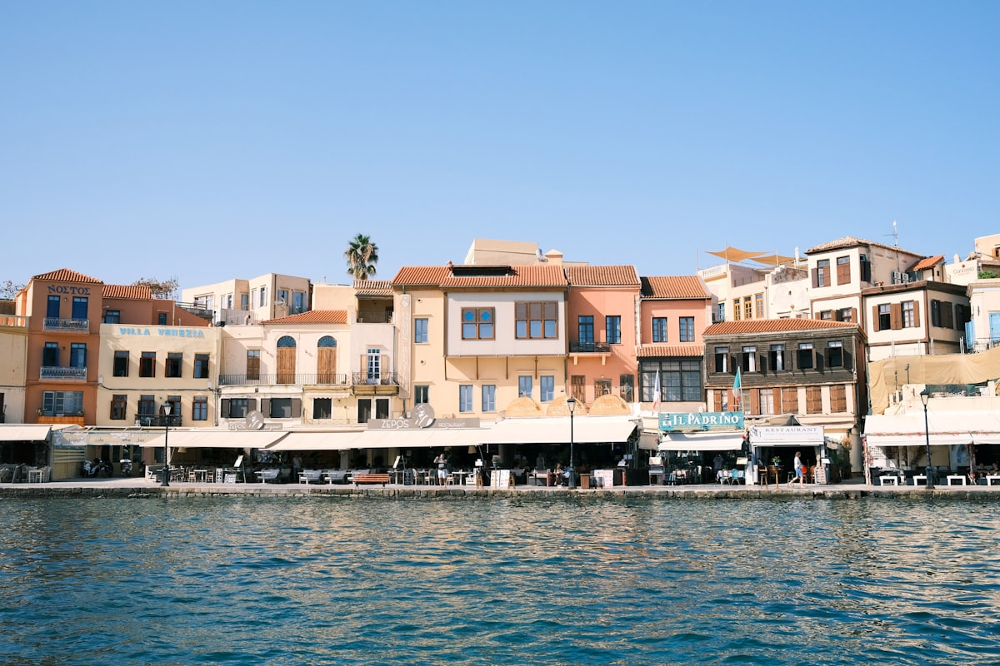
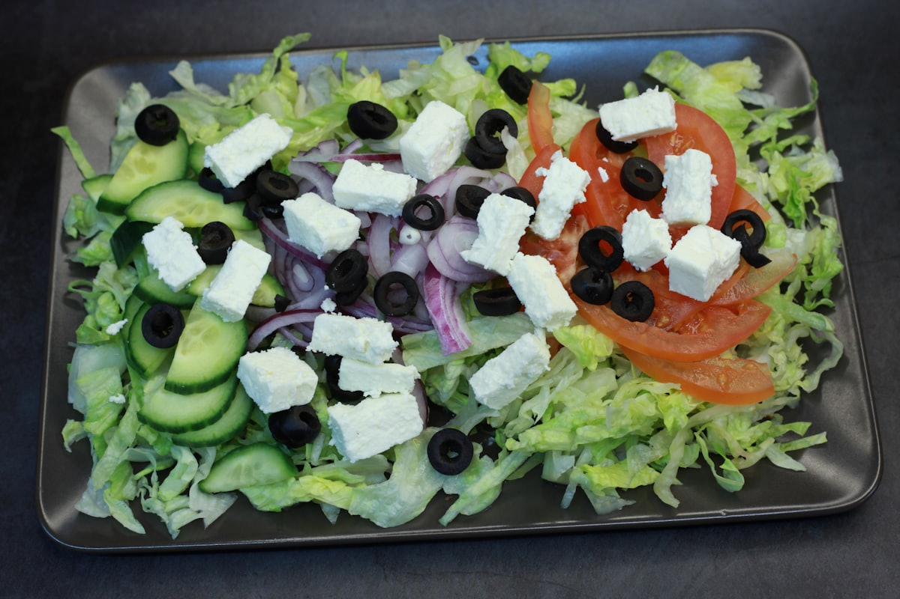

| 事项 | 结论 |
|---|---|
| 事项 | 结论 |
| 签证（最关键） | 中国护照需办申根签证（C 类短期签）；180 天内累计停留不超过 90 天；2026 年起须本人到希腊驻华使领馆/签证中心递交，签证费约 765 元，建议提前 1–2 个月办理 |
| 推荐方案 | 雅典 4 天 → 圣托里尼 4 天 → 米克诺斯 2 天 → 克里特岛 1 天 + 返程 |
| 返程约束 | 第 12 天从克里特经雅典转机返京；国际航班建议订下午/傍晚，留足船转机缓冲 |
| 行程链 | 北京 → 雅典 → 圣托里尼 → 米克诺斯 → 克里特岛 → 北京 |
| 预算（人均） | 经济 12000–18000 ／ 标准 22000–32000 ／ 舒适 50000–70000（人民币） |
| 三件提前事 | ① 办申根签证 ② 订岛际船票（夏季紧张）③ 圣托里尼住宿提前 2–3 个月 |
| 季节提醒 | 5 月/9 月最佳：人少价稳；7–8 月旺季人挤人、房价翻倍；10 月中–4 月快船班次大幅减少 |
| 支付 | 欧元现金 + Visa/Master 信用卡为主；圣托里尼/米克诺斯多数店可用 Apple Pay/扫码 |
以下为 12 天 11 晚的推荐节奏：雅典 4 天打底，飞机上岛，快船跳岛，最后克里特收尾乘夜船回雅典衔接返程。每日主景点 ≤2 个，海岛上午/黄昏出门避开暴晒。
| 日期 | 行程 | 过夜地 | 主题 |
|---|---|---|---|
| D1 抵雅典 | 北京✈雅典（直飞约 10.5h），宪法广场换岗 + 利卡维多斯山夜景 | 雅典 | 抵达+预热 |
| D2 | 卫城 + 帕特农神庙 + 伊瑞克提翁 → 卫城博物馆 → 普拉卡老城 | 雅典 | 古文明核心 |
| D3 | 宙斯神庙 → 古市集 → 阿纳菲奥提卡 → 蒙纳斯提拉奇跳蚤市场 | 雅典 | 老城漫步 |
| D4 | 国家考古博物馆 → 傍晚✈圣托里尼，宿费拉 | 费拉 | 博物馆+转场 |
| D5 | 费拉小镇 + 蓝顶教堂 + 悬崖步道 → 火山口日落 | 费拉 | 费拉初探 |
| D6 | 伊亚全天：蓝顶教堂 + Kastro 城堡看全球最美日落 | 费拉 | 伊亚日落 |
| D7 | 红沙滩 → 卡马里黑沙滩，火山沙滩日 | 费拉 | 沙滩日 |
| D8 | 火山岛游船：Nea Kameni 火山徒步 + 温泉 + Thirasia 岛 | 费拉 | 游船日 |
| D9 | 快船到米克诺斯：卡托米利风车 + 小威尼斯 + 老城夜景 | 米克诺斯 | 风车小威尼斯 |
| D10 | 天堂海滩 / 超级天堂海滩 + 提洛岛（可选） | 米克诺斯 | 海滩派对 |
| D11 | 快船到克里特伊拉克利翁：克诺索斯宫，晚乘夜船返雅典 | 夜船 | 米诺斯文明 |
| D12 返程 | 比雷埃夫斯到港 → 雅典✈北京，机动补货 | — | 收尾 |
以下为 12 天全程的逐小时执行时间线，可当作「当天打开照着走」的清单。标注 ※ 的可选项视体力与天气取舍。
| 时间 | 事项 |
|---|---|
| 08:30–15:00 | 北京✈雅典（国航 CA863 直飞约 10h50min，或经伊斯坦布尔/多哈转机 14–16h）。机场乘地铁 3 号线（9 欧）或机场巴士（6 欧）进市区 |
| 15:30–17:00 | 入住普拉卡/卫城附近酒店（核心景点步行可达），稍作休整 |
| 17:30–19:00 | 宪法广场（免费）：议会大厦前的卫兵换岗仪式（每小时整点） |
| 19:30–21:30 | 利卡维多斯山（免费，缆车 5 欧）：俯瞰雅典全城与卫城夜景，晚餐老城烤肉 |
| 时间 | 事项 |
|---|---|
| 08:00–08:30 | 卫城开门即到（夏季 8:00 开园），官网 hhticket.gr 分时段预约，避开旅行团大部队 |
| 08:30–11:00 | 卫城 + 帕特农神庙（30 欧）：山门、帕特农、伊瑞克提翁女像柱，清晨光线最好 |
| 11:00–13:00 | 卫城博物馆（15 欧）：玻璃地板下的考古现场，帕特农雕塑原件 |
| 13:00–14:00 | 普拉卡午餐：希腊沙拉 + 烤肉拼盘 |
| 14:30–17:30 | 狄奥尼索斯剧场 + 希罗德·阿提库斯剧场外观：卫城脚下的古剧场 |
| 18:00–20:00 | 普拉卡老城（免费）：石板巷、蓝白小店，傍晚看卫城点灯 |
| 时间 | 事项 |
|---|---|
| 08:30–10:00 | 奥林匹亚宙斯神庙（20 欧）：仅存 15 根科林斯巨柱，哈德良拱门就在街对面 |
| 10:30–12:30 | 古市集 Agora + 赫淮斯托斯神庙（20 欧）：保存最完整的古希腊神庙 |
| 12:30–13:30 | 午餐：蒙纳斯提拉奇广场附近吃 Gyros/Pita |
| 14:00–16:00 | 阿纳菲奥提卡（免费）：卫城脚下的基克拉迪风小白屋，圣托里尼预告片 |
| 16:30–18:30 | 蒙纳斯提拉奇跳蚤市场（免费）：古董、皮具、纪念品，砍价空间大 |
| 19:00 | 晚餐：普拉卡屋顶餐厅看卫城夜景（人均 20–30 欧） |
| 时间 | 事项 |
|---|---|
| 08:30–11:30 | 国家考古博物馆（12 欧）：阿伽门农金面具、宙斯青铜像、圣托里尼壁画 |
| 11:30–13:00 | 午餐 + 哈德良拱门（免费）街拍 |
| 13:30–15:00 | 回酒店取行李，地铁到雅典机场（约 50min） |
| 16:30–17:15 | 雅典✈圣托里尼（爱琴航空约 45min，单程 300–700 元） |
| 18:00 | 入住费拉悬崖民宿，傍晚费拉步道看火山口日落 |
| 时间 | 事项 |
|---|---|
| 08:30–11:00 | 费拉小镇（免费）：悬崖白房、钟楼、彩色阶梯，清晨人少好拍照 |
| 11:00–12:30 | 费拉蓝顶教堂 + 驴道（免费）：从老港到悬崖顶的驴道体验（可选 5 欧） |
| 12:30–13:30 | 午餐：费拉悬崖餐厅，希腊沙拉 + 海鲜意面 |
| 14:00–17:30 | 悬崖步道（免费）：费拉→伊莫洛维里 1h 徒步，蓝顶教堂与火山口同框 |
| 18:00 | 泡酒店悬崖泳池，看火山口日落 |
| 时间 | 事项 |
|---|---|
| 09:00–10:00 | 费拉乘巴士到伊亚（约 30min，1.8 欧） |
| 10:00–12:30 | 伊亚小镇（免费）：白色洞穴屋、蓝色圆顶、风车，圣托里尼明信片本尊 |
| 12:30–13:30 | 午餐：伊亚悬崖海景餐厅（人均 20–30 欧） |
| 14:00–17:00 | 自由逛：Kastro 城堡遗址、艺术画廊、驴毛织物纪念品街 |
| 18:30–20:30 | 伊亚日落（免费）：Kastro 城堡遗址是经典观景点，日落前 1.5h 占位 |
| 时间 | 事项 |
|---|---|
| 09:00 | 巴士/ATV 到红沙滩（免费）：赭红色火山岩壁 + 红沙海水 |
| 10:00–11:30 | 红沙滩游泳、崖壁小教堂拍照 |
| 12:00–13:30 | 午餐：圣托里尼乡土菜（fava 蚕豆泥、番茄球） |
| 14:00–17:30 | 卡马里黑沙滩（免费）：黑鹅卵石 + 太阳椅，滨海餐厅咖啡馆 |
| 18:00 | 返费拉，晚餐：Mama's House 或烤肉 |
| 时间 | 事项 |
|---|---|
| 09:00 | 费拉老港集合，乘双体船出海（约 40–60 欧/人，含简餐） |
| 09:30–11:00 | Nea Kameni 火山岛（5 欧门票）：徒步到活火山口，硫磺味 |
| 11:30–12:30 | 温泉湾：游船停靠，跳海游泳（海水呈黄褐色） |
| 12:30–14:00 | Thirasia 岛：安静小岛午餐 + 村巷漫步 |
| 14:30–17:00 | 回程绕伊亚北岸，海上视角拍蓝顶教堂（可选加时看日落） |
| 18:00 | 返费拉，晚餐：海景餐厅海鲜拼盘 |
| 时间 | 事项 |
|---|---|
| 08:30 | 费拉乘巴士到圣托里尼港（Athinios），乘快船到米克诺斯（SeaJets 约 1h50min–2h30min，提前订票） |
| 11:00–12:30 | 入住米克诺斯老城酒店，午后老城闲逛：帕拉波尔提亚尼教堂 |
| 14:00–17:00 | 卡托米利风车（免费）+ 小威尼斯（免费）：白色风车与海浪冲击的悬崖餐厅 |
| 17:30–19:30 | 米克诺斯老城夜景：迷宫小巷、蓝顶教堂、涂鸦门 |
| 20:00 | 晚餐：小威尼斯海边海鲜（人均 25–35 欧） |
| 时间 | 事项 |
|---|---|
| 09:00 | 乘公交（1.8 欧）或租 ATV 到天堂海滩（免费）：细沙 + 海水浴场 + 派对氛围 |
| 10:00–13:00 | 天堂海滩游泳、躺椅日光浴；可继续到超级天堂海滩：更清净 |
| 13:00–14:00 | 海滩餐厅午餐：希腊烤肉 + 啤酒 |
| 14:30–17:00 | 回老城自由活动：购物（米克诺斯品牌店）、爱琴海事博物馆 |
| 17:00–18:30 | 提洛岛（可选，船票 + 门票约 20–30 欧）：太阳神阿波罗诞生地，世界遗产 |
| 19:00 | 晚餐：老城 La Banca 附近，饭后小威尼斯酒吧看日落 |
| 时间 | 事项 |
|---|---|
| 08:00 | 米克诺斯港乘快船到克里特伊拉克利翁（SeaJets 约 4h45min，班次少需提前订） |
| 11:00–12:00 | 入住伊拉克利翁酒店（近港口），午饭后出发 |
| 13:00–16:30 | 克诺索斯宫（20 欧，7 路巴士 1.5 欧）：米诺斯迷宫、牛头怪传说、壁画复原 |
| 17:00–18:30 | 返城：伊拉克利翁考古博物馆（12 欧）看费斯托斯圆盘（可选） |
| 19:00 | 晚餐：克里特菜（Chochlii 蜗牛、Kritiki 面），登夜船返雅典比雷埃夫斯（ANEK/Blue Star 约 9h） |
| 时间 | 事项 |
|---|---|
| 06:30–08:30 | 夜船抵达比雷埃夫斯港，乘地铁 1 号线/机场快线到雅典机场 |
| 09:00–12:00 | 自由机动：市区补货（买橄榄油、蜂蜜、feta 奶酪）或机场免税店扫货 |
| 12:00–13:00 | 午餐：机场希腊咖啡 + 派 |
| 14:00 | 雅典✈北京（国航直飞约 10.5h，或经转机返京），入境到家 |
必去（必去）/ 顺路（顺路）/ 可跳过（可跳过）。

必去
必去
必去
必去
必去
必去
顺路图片为 Unsplash 主题图（帕特农神庙、伊亚日落、蓝顶教堂、米克诺斯风车、红沙滩、克里特、希腊美食等均为希腊实景），用于页面配图。更多免费景点：宪法广场、利卡维多斯山、阿纳菲奥提卡、卡马里黑沙滩、天堂海滩。
点击左侧节点可在地图上定位；点击地图 marker 会高亮对应节点。坐标为 WGS-84 转 GCJ-02 纠偏后标注。
以下为单人、不含购物的估算，人民币计价；出发地基准北京。汇率按 1 欧元 ≈ 7.8 元人民币估算。往返国际机票按直飞淡季 5500–7000 元、中转 3500–5000 元计；圣托里尼住宿是全程最大开支。
| 项目 | 经济（12000–18000） | 标准（22000–32000） | 舒适（50000–70000） |
|---|---|---|---|
| 往返机票 | 北京⇄雅典 中转 3500–5000 | 国航直飞 5500–7000 | 直飞 + 可改签 9000–13000 |
| 住宿（11 晚） | 民宿/青旅 250–450/晚 | 四星 + 圣岛悬崖房 700–1500/晚 | 悬崖泳池套房 2500–5000/晚 |
| 岛际交通 | 慢船 + 巴士 1500–2500 | 快船为主 3000–4500 | 快艇/包船 7000–10000 |
| 门票 | 基础景点约 400–700 | 含游船等约 1000–1500 | 全含 + 私人向导 2000–3000 |
| 餐饮（12 天） | 小吃 + Pita 2500–3500 | 正常下馆子 4500–6500 | 米其林/海景餐厅 9000–14000 |
圣托里尼扩为 5 天：加一晚伊亚悬崖泳池套房 + 日落双体船巡航（人均 150–250 欧含晚餐）；米克诺斯加一晚小威尼斯海景餐厅；克里特可砍，改成伊亚私享日落与爱琴海帆船出海。预算相应上调 8000–15000 元。
建议 5 月或 9 月出行避开酷暑；圣托里尼减少悬崖徒步，多安排卡马里黑沙滩与泳池酒店；米克诺斯天堂海滩对儿童开放；提洛岛可跳过。快船注意晕船，选大船 Blue Star。卫城早晨第一批入场可少排 1h。
| 方式 | 时长 | 参考价 | 备注 |
|---|---|---|---|
| 北京⇄雅典直飞 | 约 10h50min–11.5h | 往返 5500–7000 元 | 国航 CA863/864，每周 4–5 班，凌晨 02:30 起飞 |
| 北京⇄雅典中转 | 14–18h（经伊斯坦布尔/多哈/迪拜） | 往返 3500–5500 元 | 土耳其/卡塔尔/阿联酋航空，旺季涨价 |
| 雅典⇄圣托里尼 | 飞机 45min / 快船 4h45min–5h15min | 机票 300–700 元 / 船票 400–700 元 | 爱琴航空多班；SeaJets/Blue Star 从比雷埃夫斯出发 |
| 圣托里尼⇄米克诺斯 | 快船 1h50min–2h30min | 500–800 元 | SeaJets 旺季每日多班，提前 1–2 个月订 |
| 米克诺斯⇄克里特（伊拉克利翁） | 快船约 4h45min | 600–900 元 | SeaJets 每日班次少，务必提前查时刻 |
| 克里特⇄雅典（比雷埃夫斯） | 夜船 8.5–9h / 飞机 50min | 船 400–700 元 / 机票 300–600 元 | ANEK/Blue Star 夜船省一晚住宿 |
| 区域 | 价格/晚 | 优点 | 短板 |
|---|---|---|---|
| 雅典·普拉卡/卫城 | 经济 300–500 / 标准 600–1000 | 核心景点步行可达，老城氛围浓 | 旺季贵，老楼没电梯 |
| 雅典·宪法广场 | 标准 700–1200 | 地铁枢纽，购物方便 | 游客密集 |
| 圣托里尼·费拉 | 经济 500–900 / 标准 1200–2500 | 悬崖景性价比之王，交通中心 | 悬崖民宿台阶多，行李要人扛 |
| 圣托里尼·伊亚 | 标准 2500–5000 / 舒适 5000–12000 | 全球最美日落 + 蓝顶教堂 | 极贵，需提前 2–3 个月订 |
| 米克诺斯·老城 | 经济 400–700 / 标准 800–1500 | 风车与小威尼斯步行可达 | 旺季人挤人，价格翻倍 |
| 克里特·伊拉克利翁 | 经济 250–400 / 标准 500–900 | 克诺索斯宫近，物价全行程最低 | 城市景观一般 |